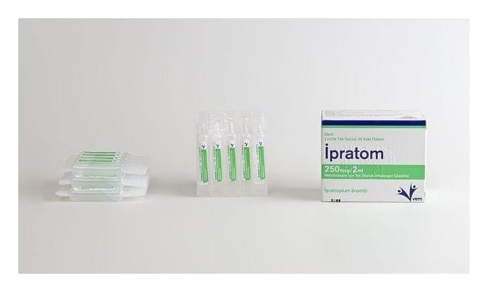

İpratom 250 mcg / 2 ml Nebülizasyon İçin Tek Dozluk İnhalasyon Çözeltisi, 20 Adet

Ne için kullanılır
KT · Bölüm 1 İPRATOM ağız veya burundan soluyarak (inhalasyon yoluyla) kullanılmak için hazırlanmış bir çözeltidir. Bu ilaç, nebulizör adı verilen bir cihaz yardımı ile kullanılır. Nebulizör cihazı, bu ilacı havada asılı zerrecikler halinde bir buğuya dönüştürür ve böylece ilacınızı soluyabilirsiniz. İPRATOM her biri bir defada kullanılmak üzere hazırlanmış tek dozluk flakonlar şeklinde piyasaya sunulmaktadır.
Bu ilacı kullanmaya başlamadan önce KULLANMA TALİMATINI dikkatlice okuyunuz, çünkü sizin için önemli bilgiler içermektedir. Bu kullanma talimatını saklayınız. Daha sonra tekrar okumaya ihtiyaç duyabilirsiniz. Eğer ilave sorularınız olursa, lütfen doktorunuza veya eczacınıza danışınız. Bu ilaç kişisel olarak sizin için reçete edilmiştir, başkalarına vermeyiniz. Bu ilacın kullanımı sırasında, doktora veya hastaneye gittiğinizde doktorunuza bu ilacı kullandığınızı söyleyiniz. Bu talimatta yazılanlara aynen uyunuz. İlaç hakkında size önerilen dozun dışında yüksek veya düşük doz kullanmayınız.
İPRATOM’un etkin maddesi ipratropium bromür antikolinerjikler denilen bir ilaç grubuna aittir. Antikolinerjikler, bronş genişleticiler (bronkodilatorler) adındaki, daha geniş bir ilaç sınıfının üyeleridir. İpratropium bromür, uzun süredir var olan (kronik) astım ve KOAH (kronik tıkayıcı akciğer hastalığı) gibi hastalıkları nedeniyle solunum güçlüğü yaşayan hastalarda nefes alıp vermeyi kolaylaştırmak için kullanılır. Kronik tıkayıcı akciğer hastalığı (Kronik obstrüktif Akciğer Hastalığı-KOAH), nefes darlığına ve öksürüğe sebep olan, uzun dönemli bir akciğer hastalığıdır. KOAH terimi, kronik bronşit, amfızem ve astım gibi hastalıklar ile ilişkili bir tablo anlamına gelmektedir. İPRATOM ayrıca, beta
-agonist ilaçlar adı verilen salbutamol gibi ilaçlar ile birlikte aynı zamanda da kullanılabilir. İPRATOM, etkisini solunum yollarınızı açarak gösterir. Tek dozluk flakonlar uygun nebülizatör cihazları ile inhalasyon şeklinde kullanılmak üzere hazırlanmıştır. İPRATOM’un doğru bir şekilde kullanılması konusunda lütfen “3. İPRATOM nasıl kullanılır?” bölümüne ve bu bölümdeki “Uygulama yolu ve metodu” başlığı altındaki “Uygulama talimatı”na bakınız.